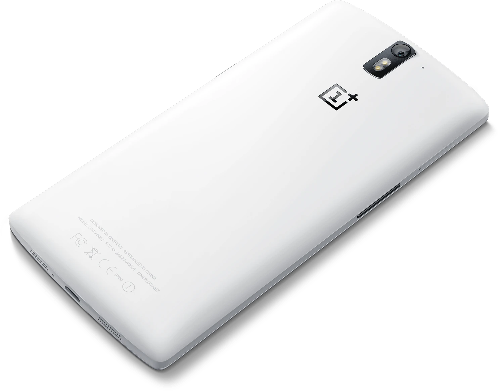
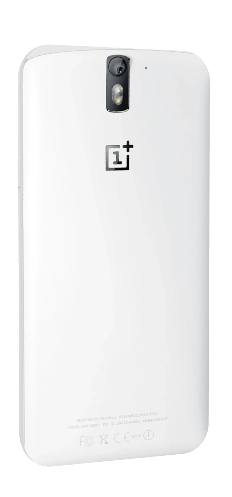
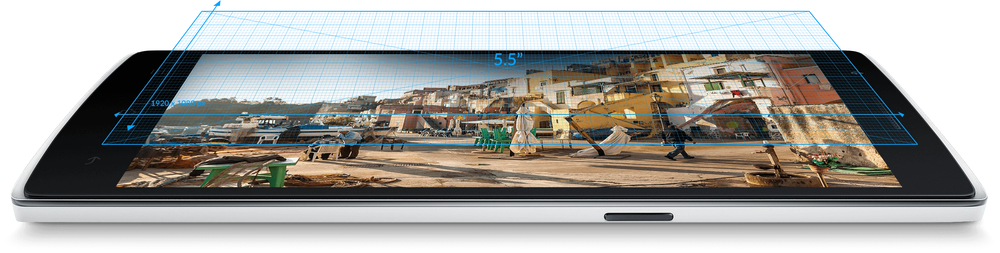
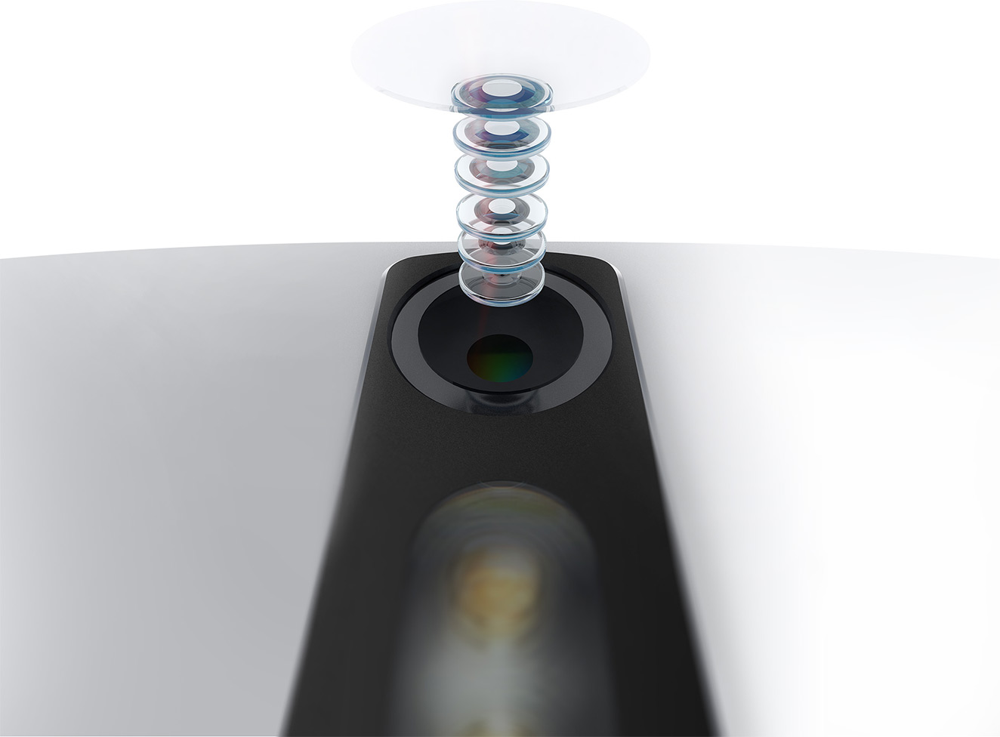
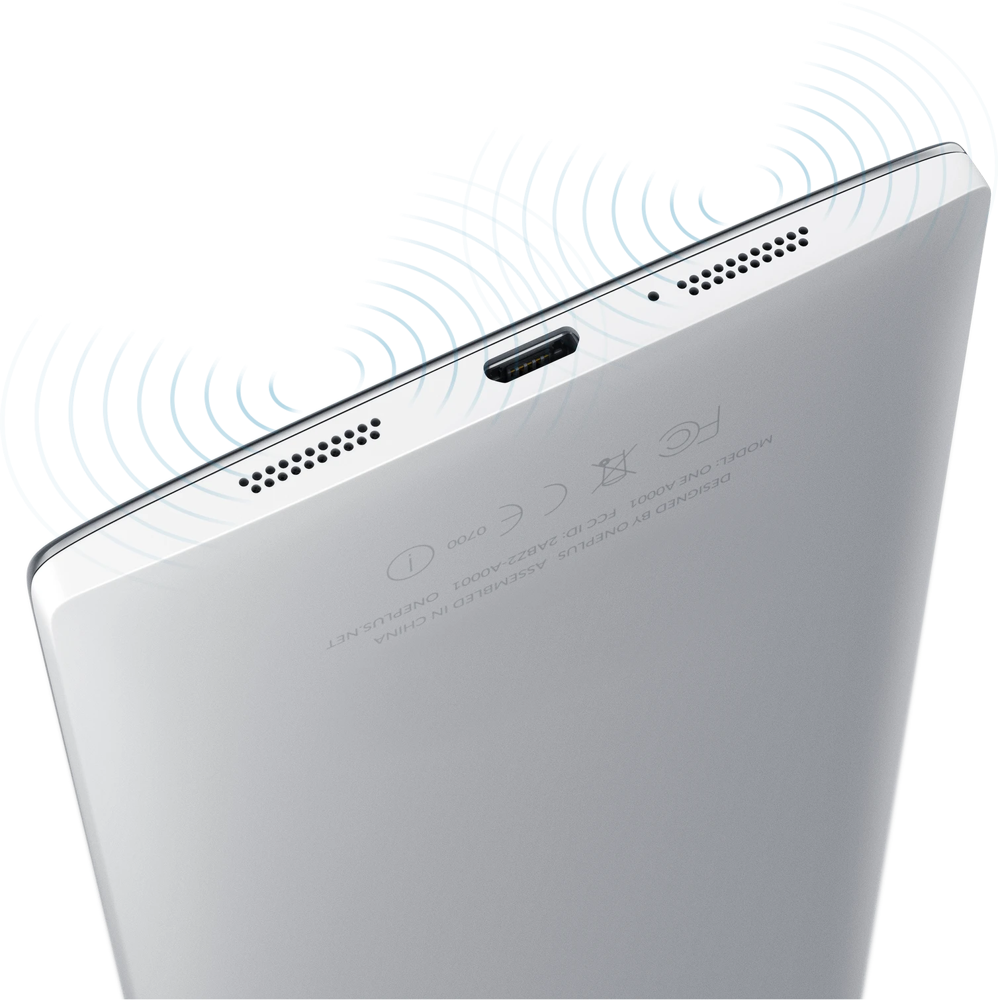
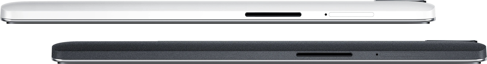

Дизайн
Со всех сторон
- Silk WhiteМатовая белая спинка, чуть выпуклая: телефон удобно лежит в руке.
- 8,9 ммТолщина корпуса. К краям он сужается до 4,6 мм.
- 5,5″Экран почти во всю переднюю панель. Весит телефон 162 грамма.

Экран
Пять с половиной дюймов
Экран Full HD под стеклом Gorilla Glass 3. В 2014 году такой большой и чёткий ставили только в самые дорогие телефоны.
- 5,5дюйма
- 1080pFull HD
- 401точка на дюйм

Камера
Шесть линз в объективе
На снимке объектив разобран: шесть линз стоят друг за другом над сенсором. Диафрагма f/2.0 пропускает много света, поэтому кадры в сумерках выходят светлее.
- 13Мп
- 6линз
- f/2.0диафрагма
- Процессор
- Snapdragon 801
- Частота
- 2,5 ГГц, 4 ядра
- Память
- 3 ГБ
- Накопитель
- 16 или 64 ГБ
- Батарея
- 3100 мА·ч
- Система
- CyanogenMod 11S
Начинка
Железо флагмана
Процессор тот же, что в самых дорогих телефонах 2014 года, а оперативной памяти даже больше. Батареи хватало на полный день.
- 801Snapdragon
- 3ГБ памяти
- 3100мА·ч

Звук
Два динамика снизу
Стереодинамики настроены вместе с JBL и стоят на нижнем торце, поэтому ладонь и стол их не закрывают. Три микрофона убирают шум во время разговора.
- 2динамика
- 3микрофона
- JBLнастройка звука

Корпус
Тоньше, чем кажется
Корпус сужается к краям, поэтому в руке телефон кажется тоньше своих 8,9 мм. Выпускался в двух отделках: белой Silk White и чёрной шершавой Sandstone Black.
- 8,9мм
- 162грамма
- 2отделки
В цифрах